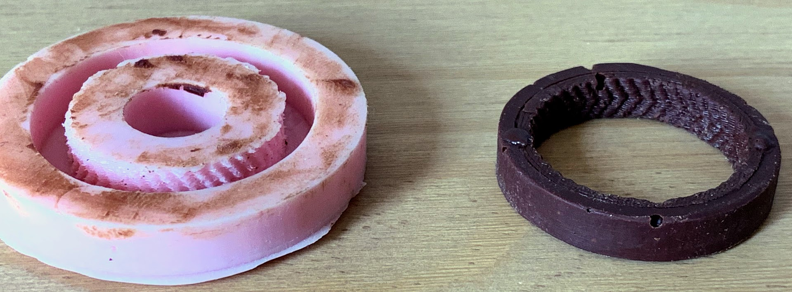

Chocolate Gears
Project Description
The goal of this project was to explore a material of our choice by highlighting material properties that are unique to our chosen material. I chose to work with silicone and chose to highlight a few important charecteristics.
Silicone, becuase of its low stress to strain relationship, it allows for the creation of molds that are much simpler than would be possible with a more rigid material.Secondly, and the material property that I was most exicited for was its ability to be food safe once cured. in order to highlight these two propreties, I wanted to create molds that allowed me to cast planitary gearboxes out of chocolate.
Initial Testing
Going into the project, becuase I had limited expirence in silicone molding, I wanted to validate the process that I was planning to use for the project. The first thing that I wanted to look at was how well I could create n object that would normally need a multipart mold to cast. I decided for this test that casting a small piston that has a small 'CMU' inscribed on the side as well as a couple rings on the bottom. I also chose to use ice to test my molds as it has a fast set time, is readily available, and has similar properties to chocolate, especially in the retlation to its brittleness.
The results of the initial testing was suprisingly good. It is difficult to see above because of the clear ice, but the details on the cylinder of the piston was extremely good - these details are much easier to see in the ice gears that I also tried. The issue with the piston, and the main reason I decided to transition to the planitary gears was that the stem of the piston would generally snap when trying to get the piston out of the mold. Even cutting the mold into parts failed to eleviate this issue.
Second Iteration
When I began making all of the molds that I would need for the planitary gears and outer ring, I wanted to ensure that I would have enough silicone for multiple further iterations in the event something did not go as expected. In order to do this, I CNC routed out containers to hold the 3D printed gears and the silicone. These containers were designed such that the sides could be easily broken off allowing the silicone to be removed without risk of damage to the mold. In my testing, I also determined that it was difficult to remove the outer ring from the mold. Because of this, I added a hollow center to the mold to allow for much easier removal.
Overall, the project was very successful as I was able to create a working planitary gearbox out of chocolate and was able to show off some of the properties of silicone. As you can see below, the chocolate parts were extreemly detailed, even being able to see the individual print layers from the original parts that were used for molding. Unfortunately I was not able to temper the chocolate properly and because the gears that I used had small teeth, the chocolate teeth did not last long once I started spinning the gearbox.